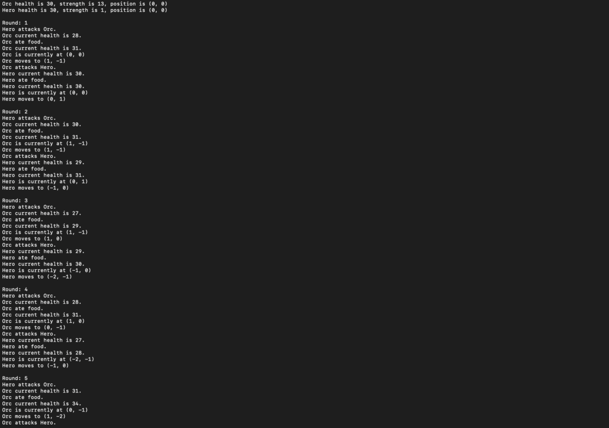

Welcome to Sam Rabinor's Web Page
This page is meant to be used for Advanced Programmers Workshop
This years projects:
-
Text based adventure game (Python)
Click me for more info on this project!
You might have noticed this project is labeled as 0 in the list.
That's because this is a project that I started last year during
an independent study! This project originated with a simulation
in which a program my classmates and I were guided through randomly
generated some attributes-strength, health, etc...-for two
characters. It then simulated combat between the two, alternating turns
with each character eating food to heal and attacking the other until one
of them died.

I enjoyed the concept and wanted to expand upon it, so I decided to take
this concept and developed it further, adding a randomized map, character
customization and a lot more. I did not finish the game for reasons explained
in this years project labeled "Learning C++", however I did
create a large amount of code and framework for the game which can be found on
github or you can download the files
here.
Unfortunately I did not maintain a dev_log during my time coding this project,
however I intend to keep one on any future projects I take on!
-
Learning C++
Click me for more info on this project!
Labeled as 1 in the list, this is the project I intend to take on
this year. As mentioned in the Text based adventure game project,
I never fully completed my game in Python. This is due in large part to how dificult Python
is to code with when it comes to game development. Towards the end of my work on that project
I began reaserching different languages that might facilitate the process of coding my game
idea. That is when I discovered C++.
Attracted by the language's object oriented code and direct memory access, and backed by it's
usage in several large companies who work in game development I decided to try and learn it.
So far I have used two sources, the first is a playlist of 101 videos by a youtuber called
The Cherno. You can check out his channel by clicking his name, he has a multitude
of playlists on more than just C++, if you want a link to the C++ playlist you can find that
here. The second resource I have used is a variety of courses on a website
called Codecadamy, an online platform with lessons for all programming levels which can be found
here.
The dev_log for this project can be found here.
-
Translate Python based game to C++
Click me for more info on this project!
This project is a combination of the two projects that precede it. While Python is an amazing
language to code in, it is very difficult to create a game the way that I wanted to. I chose
not to use some of the add-ons that would have made this project simpler such as PyGame (a
cross-platform set of Python modules designed for writing video games). Opting instead to try
and code the game from the ground up myself. This is ultimately the reason that I ended the
project where I did as well, as there were certain things I was having a very hard time doing.
Drawn in by the appeals I mentioned in Learning C++, I decided I would
continue to work on my game from the ground up the way I wanted to. Using C++ would help me facilitate
this process, however I didn't want to comepletely drop all of the work I had put in during my time
working in Python. So I decided that once I had learned C++ and gained an understanding of how it
worked I would translate all of the code from Python over to the best of my abilities. This way, I
wouldn't lose any of the time and work I put in to the Python version and already have a big headstart
on finishing the game once I translated everything over.
While it likely wont be active for a while, the dev_log for this project can be found here.
-
Multiplayer 2D-2.5D game on unity (C#)
Click me for more info on this project!
The following project description was taken from the website of the person I intend to collaborate
with through out this project as they will be the main dev and were the one who suggested I join to
help create this:
From William Kamfar - I want to make a multiplayer 2D or 2.5D (3D models in a 2D space) fighting game
like Guilty Gear -Strive- or BlazBlue Centralfiction with Visual Novel elements for story telling in
C# using Unity. This has been a passion project of mine for a while, and I want this game to create cool
moments, and generate a sizable dedicated community like with Street Fighter Third Strike and
Evo Moment 37. I want to add a cast of
unique characters that are all fun to play, and embody the different fighting styles throughout the
genre's history. Along with this cast, I want to add unique system / universal mechanics for this game
as well as adding a Roman Cancel system (from Guilty Gear) as I really enjoy using it. I also want to
add a soundtrack reminiscent of my favorite entries to the genre, as well as maps that take place at
beautiful, stylistic vistas. If I have time, along with the fighting game itself, I want to add a story
mode that really works to add more depth to the characters.
A dev_log for this project can likely be found on William Kamfar's page.